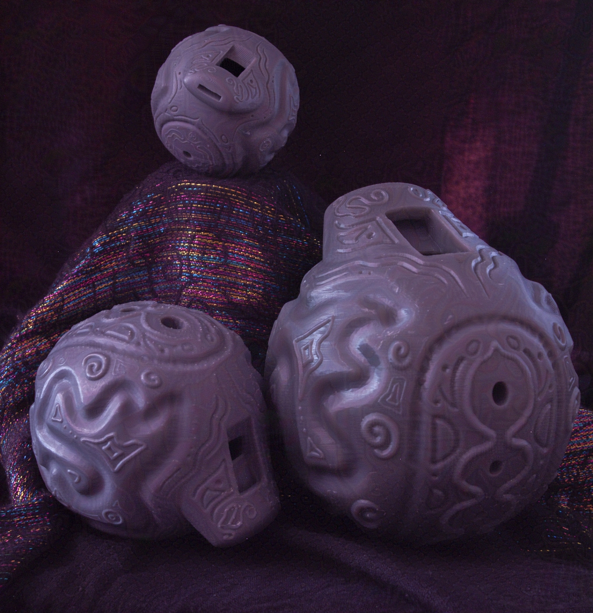

Bichos
Digital fabrication that engages space.
The ocarinas of Bichos resemble eggs.
Called to create a project that engages with space, Bichos, meaning critters, are ocarinas that are playable at different scales, but can also play different notes at one size. Like an harmony of sounds in an orchestra, nature exhibits a symphony of sounds because of the life that inhabits it. A call to make a digitally fabricated work that engages with space beyond physical presence is what prompted me to make a series of playable ocarinas. By using sound as the factor Bichos engages the space with, the space engages with the sounds back with its acoustics.
Side Detailing. The ocarinas are symmetrical.
Base modeled in Rhino, details sculpted in Blender. Printed in FormLabs 3 Resin Printer. Resin is ideal because the inner chamber of the ocarina needs to bve smooth to ensure the quality of the sound. Any deforming of the inner chamber or the key holes will affect the sharpness of the sound. Having no experience prior with musical instrument design, I had no prior understanding of the intricacies thgat goes into makign woodwinds. Research and testing is what makes design related to science.